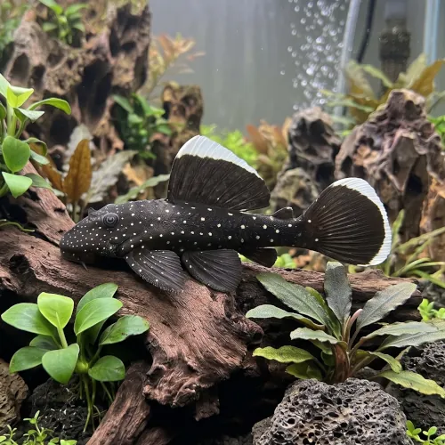

Nome popular principal
Cascudo Bodó Seda L183
Cascudo Bodó Seda, Cascudo L183, Starlight Bristlenose Pleco, Ancistrus Dolichopterus
Ficha de peixe
Cascudos e Limpa-Fundos
O verdadeiro Starlight Bristlenose do Rio Negro, destacando-se pelo padrão pontilhado reluzente sobre fundo negro aveludado e hábitos extremamente pacíficos.

Nome popular principal
Cascudo Bodó Seda, Cascudo L183, Starlight Bristlenose Pleco, Ancistrus Dolichopterus
Nome científico
Nome técnico essencial para taxonomia, cruzamento de manejo e referência editorial consistente.
Dificuldade de manejo
Use este nível como referência inicial, sempre considerando volume, estabilidade e compatibilidade do aquário.
Seção 1
Seção 2
Seções 4 a 6
Cascudo Bodó Seda L183 tem hábito alimentar herbívoro. Excelente. 1 a 2 vezes ao dia (preferencialmente ao escurecer). Alimenta-se de algas, rações afundantes ricas em spirulina e aceita muito bem rodelas de vegetais como abobrinha, pepino e chuchu levemente aferventados.
Machos adultos desenvolvem tentáculos ramificados proeminentes no focinho; fêmeas têm o focinho liso ou com pequenas cerdas curtas nas bordas. Tipo de reprodução: Ovíparo. Dificuldade de reprodução: Intermediário. A desova ocorre no interior de cavernas escuras, onde o macho cuida dos ovos e oxigena a ninhada até a eclosão e absorção do saco vitelino.
Alta. Substrato recomendado: Areia fina ou substrato escuro macio com abundância de troncos e cavernas. Necessidade de esconderijos: Alta. A presença de troncos no aquário é indispensável, pois fornecem fibras de madeira (lignina) fundamentais para a digestão da espécie.
Seção 7
O verdadeiro L183 possui 1 raio duro e 8 raios moles na nadadeira dorsal, mantendo a distinta orla branca nas nadadeiras por muito mais tempo que outras espécies similares.
Seção 8
O verdadeiro L183 possui exatamente 8 raios moles na nadadeira dorsal (diferente de outros Ancistrus que possuem 7) e mantém a borda branca viva na dorsal e cauda.
Como habita a bacia do Rio Negro, exige água quente (26°C a 30°C) e nitidamente ácida a levemente ácida (PH entre 5.0 e 6.8).
Sim, a raspagem de troncos fornece lignina e fibras vegetais indispensáveis para o correto funcionamento do trato digestivo do peixe.